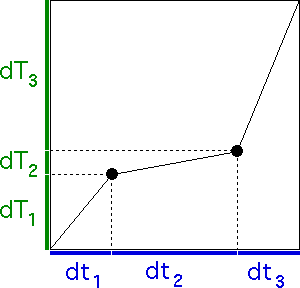

| To find the trading time generator, first we solve | |||
| 1 = |dY1|D + |dY2|D + |dY3|D = 0.5D + 0.25D + 0.75D. | |||
| The Mathematica command is | |||
| FindRoot[0.5^D + 0.25^D + 0.75^D == 1,{D,1}] | |||
| The approximate solution is D = 1.73051. | |||
| With this value of D we find the trading time generators dT1, dT2, and dT3: | |||
| |||
| Here is the trading time-clock time generator. | |||
|  |
Return to Example 1.